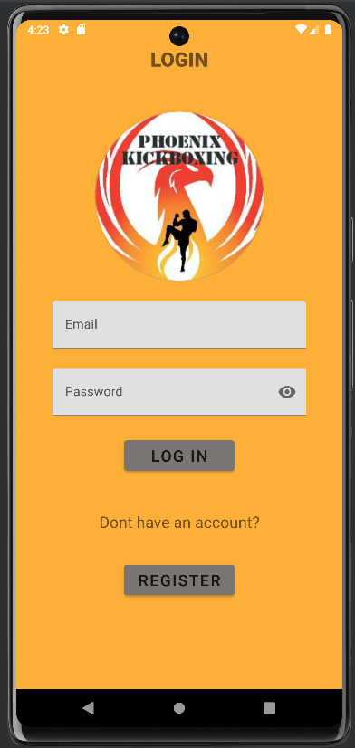
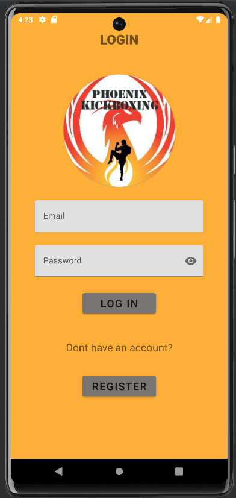

My Projects
Phoenix Kickboxing Application
Description:
A mobile application that serves the purpose of being a "booking" app for the client we made it for. It allows users to book a training session and view their booked sessions, along with a few customization items and a link to the NGO's (Non-Government Organization's) website (which we developed as well). The client overall was very happy with the app, and so was the team. This was our first touch of industry experience, as we had to seek out the client ourselves, gather the requirements and develop/design everything ourselves. Overall, the app was very fun to develop as it was our first major mobile application, and it gave us good experience for developing and designing future mobile applications. This mobile application is currently under testing in order to be deployed on Google Play Store.
Software used to develop the application:
- Android Studio
DOWNLOAD APPLICATION IMAGES
 


Farmer Store Website
Description:
A web application that has the sole purpose of making managing stock for a farmer's store easier. This application was made as a project for one of my degrees assignments and made entirely by me. The background was there is a store which all the farmers in the area delivered their products to, in order to sell their products to the town. The boss of the store wanted a website to track all the deliveries of every farmer and store all the information in a database. The boss wanted to keep track of what products they delivered, the amount and more, while allowing the farmers and employees to have their own accounts in order to do specific things. The employees can add the farmers profiles to the database, while also being able to keep track of all the information from their deliveries. The farmers are able to add their delivery details once they made a delivery, and that information is added to the database. I got a very good mark for this project, and I consider it as a mark for my beginning of creating more amazing web applications.
Software needed to run the application:
- Visual Studio (any version is fine, the application was made on VS2022)
A readMe is provided for further details about the application
DOWNLOAD APPLICATION
Dewey Decimal System Application
Description:
A windows form application designed to teach users about the dewey decimal system. This application was also made as a project for one of my degrees assignments and made entirely by me. The background was a librarian wanted an application that would teach her new employees about the dewey decimal system. The dewey decimal system is a hierarchical classification system for libraries, organizing books and other library materials based on subject and discipline. This application added gamification features to learning the dewey decimal system in order to make learning about it fun and educational at the same time. There are 3 games that the user can choose to play, with each game being vital to learn and fun to play. This is one of my best and biggest applications that I have made so far, and it was challenging to make. I also got a very good mark for this project, and I hope you have a little bit of time to try it out, its worth a shot.
Software needed to run the application:
- Visual Studio (any version is fine, the application was made on VS2019)
A readMe is provided for further details about the application
DOWNLOAD APPLICATION